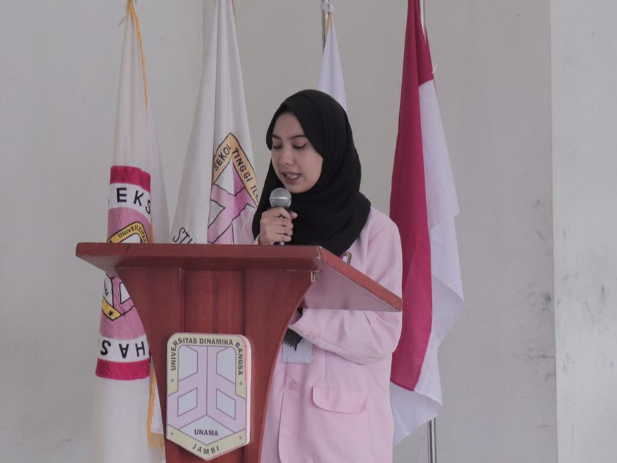
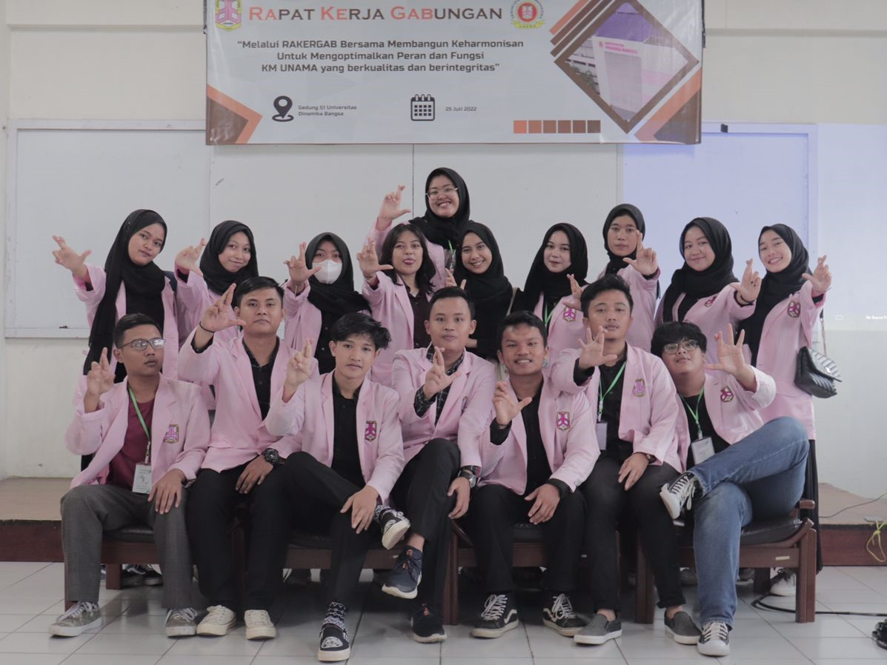
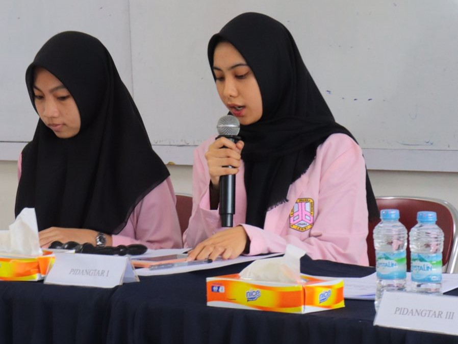
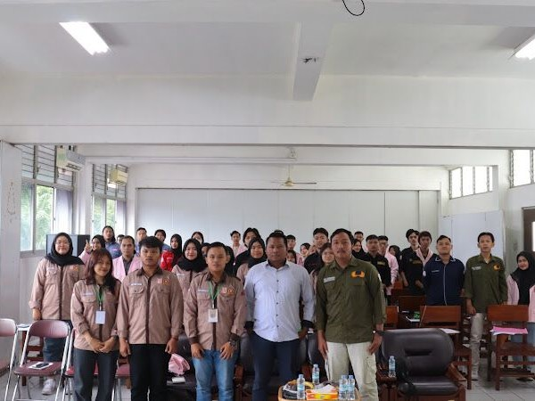

Organizational Experience
- Served as chairman of Commission II: Vocational and Delegation, tasked with creating and designing ADRT laws (Anggaran Dasar Rumah Tangga) KM UNAMA.
- Chairman of the 2023 RAKERGAB (Rapat Kerja Gabungan) organizing committee, responsible for supervising and controlling the event with over 30 registered participants.
- Chair of the "KONGRES MAHASISWA" meeting in 2023, consisting of over 50 participants.
Photos from My Experiences




These experiences have not only helped me build my communication skills but also foster teamwork and leadership qualities.
Back